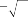
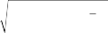

affect the model.16 This factor adds depth to a strictly financial model, though, because it contains information that may not be obvious from the most recent financials and yet may indicate a burgeoning operational problem (or, conversely, the seed of a future competitive advantage). Other social responsibility variables are probably less useful for QEPM, but we list them in Table 4A.13 for those interested in this area of analysis.
Earlier in the chapter we compared QEPM factors with cooking ingredients. Building an investment model, like creating a meal, is a mix of science and art, and many managers build models very intuitively, adding factors according to taste. When it comes to building most quantitative models, though, the cooking compari- son only goes so far. The chef may not need to know chemistry, but the quantitative portfolio manager must understand financial and economic theory in order to choose and combine factors appropri- ately, always keeping in mind the seven tenets of QEPM.17 The manager has to ask himself or herself why the market has not already identified the arbitrage opportunity that he or she sees. He or she needs to consider whether factors that worked in backtests using historical data will continue to work in the future. In this section we suggest several techniques of factor choice supported by theory. As we discussed in Chapter 3, there are two basic types of quantitative stock-return models: the fundamental factor model and the economic factor model. To choose factors for the funda-

16 KLD Research and Analytics, Inc., collects and classifies companies according to social criteria. KLD’s database, Socrates, provides in-depth profiles of over 3000 U.S. corporations, including every company in the Standard and Poor’s 500, Russell 3000, and KLD’s Domini 400 Social Index. The profiles present analysis on a range of issues that reflect a company’s overall social record and include social ratings that highlight a company’s strengths and weaknesses. The following issues are covered: community relations, employee and union relations, environmental liabilities, corporate governance, human rights, environmental impact, diversity, product quality and safety, environmental policies and practices, abortion, contraceptives, military weapons, adult entertainment, firearms, nuclear power, alcohol, gambling, and tobacco. A KLD competitor, Investor Responsibility Research Center (IRRC), provides similar data. Additional information on the companies can be found at www.kld.com and www.irrc.com.
17 See Chapter 2.
mental factor model, we suggest using the univariate and multiple regression techniques. To choose factors for the economic factor model, we suggest using the unidimensional and multidimen- sional zero-investment portfolio techniques.18 In addition to these techniques, we also suggest using a simple correlation statistic or Kendall’s rank-correlation statistic to determine the correlation among factor choices. These techniques aid in combining and grouping factors.
4.6.1 Univariate Regression Tests
Many portfolio managers simplify the process of searching for relevant factors by performing a series of simple regressions of factors.19 That is, they begin by first identifying a group of factors that they can theoretically justify explaining stock returns. They then run panel regressions on each factor versus the stock returns in the universe. Thus
ri,t = + fi,t + Ei,t (4.1)
where i,t is the factor exposure of stock i at time t, and the estimate of f from this panel regression will show the relationship between the factor and stock returns. If a factor has a significant value of f, then the factor is useful in explaining stock returns.
The drawback of univariate regressions is that the portfolio manager may find many variables that are significant in explaining stock returns but are surrogates for each other. For instance, he or she may find that both P/E and P/B ratios explain stock returns but that they represent the same idea. Thus only one of them may be needed in the model. Ideally, one would like to find factors that help in explaining stock returns but are not highly correlated with each other. In terms of the fundamental law discussed in Chapter 2, we know that the more factors that we find to explain stock returns, the higher will be our information ratio, provided that the average contribution of each factor does not decrease. Thus, if we add a factor that is highly correlated with an existing factor, we pro- bably will decrease the contribution of each factor, which will not

18 For an additional discussion on testing the out-of-sample predictability of factors, see Chapter 9 of Campbell et al. (1997).
19 Simple regression means that it is a regression of one variable on another. Multiple regression is a regression of one variable on many other variables.
improve the model. Then why use simple regressions for factor searching at all? First, they are very simple to perform. Second, they are a way to get an early idea of what might be relevant and what might not be relevant. If there are too many potential factors, the simple regression can be used to make the first round of cuts.
4.6.2 Multiple Regression Tests
The multiple regression is more sophisticated for determining which factors to include because it considers the relationship among factors while estimating the impact on return. The greatest danger with this method is that if the portfolio manager includes too many factors in the regression, there is a chance of misspecification bias, which leads to misleading statistical inference.
If the portfolio manager has limited the number of explanatory factors to something reasonable, say, fewer than 10 factors, then a multivariate panel regression can be estimated, that is,
ri,t = + f1i1,t + … + fKiK,t + Ei,t (4.2)
where K is the number of factors to investigate, and ik,t is the expo- sure for stock i to factor k at time t. Once this regression is estimat- ed, all insignificant factors are dropped. The significant factors go into the factor model.20
One of the biggest dangers here is data mining, of course. Data mining is the process of taking historical data on stock returns and factors and testing a variety of models until the portfolio manager finds the model that best predicted or explained past stock returns. There are many ways to do data mining, and we discourage all of them for two reasons. By searching in a set of historical data for the factors that best explain stock returns, the portfolio manager is guaranteed to find a group of factors that would have worked his- torically, but this provides absolutely no guarantee that these fac- tors will work in the future. The t statistics or significance of these factors historically also is misleading because the manager did not take into account every repeated-factor group he or she tested. If these were taken into account, the actual t statistics would be much lower (see Chapter 2 for more details on problems related to data mining). Furthermore, by only finding the factors that explain

20 Appendix C on the accompanying CD describes some of the potential problems with including too few or too many factors in a factor model.
–
–
–
stock returns statistically in the past, the portfolio manager has clearly failed to provide any theoretical explanation of why those factors were chosen. This is very bad practice for any serious quan- titative portfolio manager. Data mining can be a serious problem when one uses the stepwise regression technique.21 This method involves starting with a collection of factors and then running a regression on every possible combination of the factors and picking the set of factors with the largest R2.
A related technique is the sequential specification search. The portfolio manager begins with a list of factors that he or she believes explains stock returns, and for this set of factors, he or she looks at the estimated coefficients. He or she may then decide to drop one factor because of insignificance and add another factor based on theory. He or she may do this a few times until he or she obtains a desired level of significance at explaining stock returns. This also leads to exaggerated statistical significance. Usually, the portfolio manager will not report the failed model attempts, which makes it very difficult for the investment committee to evaluate the truth or significance of the final stock-return model.
The best advice for choosing factors is to begin with a strong explanation, grounded in theory, of why a model with certain fac- tors will work. A manager might even start with a few potential models. He or she then should test the models on the data but be wary of adding and dropping variables. He or she should test the model over a variety of time periods for model robustness.
4.6.3 Unidimensional Zero-Investment Portfolio
Portfolio managers may construct zero-investment portfolios based on a factor and study the characteristics of the portfolio. Typically, a manager will split the universe of stocks conditional on a particular factor exposure into thirds, quintiles, or deciles. Of course, any other division of the stocks is acceptable. Usually, a portfolio is created from the first division, and another portfolio is created from the last division. The returns of the top division are subtracted from those of the last division. These are the returns to a hypothetical zero-investment portfolio in which the top-division portfolio is bought and the last-division portfolio is shorted. It is

21 Unfortunately, we have met many portfolio managers who do this. Most econometric software packages actually have procedures that do this very easily.
called zero investment because, theoretically, no capital needs to be used to create the portfolio. The returns of this portfolio measure the benefits from using this factor to pick stocks.
Portfolio managers divide the universe of stocks into the either deciles or quintiles. We shall do an example with quintiles. Suppose that the factor of interest is the P/B ratio. The first task is to rank the universe of stocks by their P/B ratio exposure in each historical period. There are a variety of methods to do this. The stocks can be ranked monthly, quarterly, or yearly. The stocks should be ranked for every month for some historical period, say, 5 to 10 years of historical data to the present. The next step is to create an equal-weighted portfolio of stocks in the first quintile and an equal-weighted portfolio of stocks in the fifth quintile. The first quintile is just the 20% of stocks ranked highest according to the factor, which in this case is the P/B ratio. The fifth quintile is the bottom 20% of stocks ranked according to the P/B ratio. The next step is to compute the returns of the two portfolios for each month- ly period. Of course, these portfolios will change over time on a monthly, quarterly, or yearly basis depending on the QEPM’s choice of rebalancing period. The final step is to calculate statistics on the historical returns of the first-quintile portfolio minus the fifth-quintile portfolio. This procedure should be repeated for every factor that the manager is interested in using as a predictor of stock returns.
After the zero-investment portfolio returns have been calcu-
lated, one can do a statistical test of whether the average portfolio return is significantly different from zero. Suppose that we calcu- lated portfolio returns for T periods and obtained r1, …, rT. Then the t statistics can be calculated as follows:




r T
r T
r T
1 T
1 T
1 T
T 1
T 1
T 1
s1 s
s1 s
s1 s
r r
r r
r r
2
2
2
tˆ ˆ
tˆ ˆ
tˆ ˆ
r
r
r
Sr
(4.3)
where r- is the sample average, that is, (1/T)T r , and Sˆ(r-) is the
s =1 s
standard error of the mean. The value of the t statistic should be
compared with the t distribution with T – 1 degrees of freedom. Although one should look at a t-statistics table for the actual criti- cal values of the t statistic to determine significance, a good rule of thumb is that if the absolute value of the t statistic is greater than 2,
the average portfolio return is significantly different from zero, and the factor is statistically significant.
4.6.4 Multidimensional Zero-Investment Portfolio
Zero-investment portfolios also can be created by considering many factors simultaneously. This approach is more rigorous than the unidimensional approach because we can examine the joint sig- nificance of factors. Construction of the zero-investment portfolio proceeds almost in the same way as before. The portfolio manager ranks all stocks by each factor of interest. If there are two factors, say, size and P/B ratio, then each stock will be assigned two rank- ings, one by size and the other by P/B ratio. Based on these rank- ings, the portfolio manager can group stocks into a number of joint quintiles or deciles. If the portfolio manager wants to create 10 groups out of each factor, then there will be 100 groups eventually. From the size factor, there will be 10 portfolios starting from the smallest to the largest. From the P/B ratio, there also will be 10 portfolios from the lowest to the highest. By taking intersections of these portfolios, one can obtain 100 portfolios.
Given 100 portfolios, the method to create the zero-investment
portfolios depends on what the portfolio manager is interested in. If he or she is interested in whether small size and low P/B ratio together influence stock returns, he or she could create the zero-investment portfolio by taking a long position on a small-low portfolio and a short position on a large-high portfolio. Once the zero-investment portfolio is constructed, t statistics can be calculat- ed to determine whether the joint effect of the factors is significant, as explained in the preceding subsection.
4.6.5 Techniques to Reduce the Number of Factors
There are several methods to determine the correlation among fac- tors. A quantitative portfolio manager could use these methods to determine whether certain factors are highly similar to one another either for the grouping of factors or to aid in reducing the number of factors in one’s stock-return model. We discuss two types of sta- tistics here, one based on simple correlation and the other based on rank correlation.
In general, a perfect correlation (i.e., a correlation of 1) indi- cates that the two factors are almost identical, whereas a correlation of 0 would indicate that the factors are quite independent. In the extreme cases of perfect positive or negative correlation, the two factors are more likely to be redundant. In the in-between cases, the quantitative analyst would have to have a cutoff criterion.
The first statistic we discuss is called the within-correlation coef- ficient. It is the correlation coefficient adjusted for the panel struc- ture of the data. We first calculate the covariance and the standard deviation for each period, aggregate them over time, and then take the ratio. This adjustment is necessary to make sure that we are examining contemporaneous correlation. Specifically, given two variables X and Y, the within-correlation coefficient is calculated as
X, Y
t Ct X , Y
t Ct X , Y
t Ct X , Y
s
s
s
Vs X Vs Y
Vs X Vs Y
Vs X Vs Y
(4.4)
where Ct(·) and Vt(·) indicate the covariance and the variance cal- culated using the values of X and Y at period t.22
The second statistic we discuss is based on Kendall’s . Kendall’s shows the rank correlation (i.e., whether the ranking by one variable is related to the ranking by another variable). Conceptually, Kendall’s answers the following question: “Suppose that you choose a pair of observations. You rank these two observations based on the value of one variable. Then you rank the observations based on the value of another variable. Then what is the probability that the ranking by one variable is identical to the ranking by another variable?” Thus, if Kendall’s is 100%, then for every pair of observations, the ranking by one variable is always identical to the ranking by another variable. If Kendall’s is negative 100%, then for every pair of observations, the rankings by two variables are opposite. If Kendall’s is 0, half the time the rankings by two variables are the same, and the other half of the time the rankings are opposite.

22 Note that this is identical to
V X Et X V Y Et Y
V X Et X V Y Et Y
V X Et X V Y Et Y
X, Y
C X Et X , Y Et Y
This is why we call it the within-correlation coefficient.